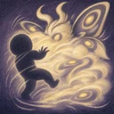

Polvo de alas
Inflige al objetivo actual, si está a una distancia máxima de 4 casillas, daño mágico equivalente al 200% del Poder mágico y le aplica durante 10 s una debilitación que deja su Velocidad de movimiento y su Velocidad de ataque en el 70% de sus valores justo antes de aplicarla. Esta debilitación se acumula hasta 6 veces, y cada acumulación tiene su propia duración.